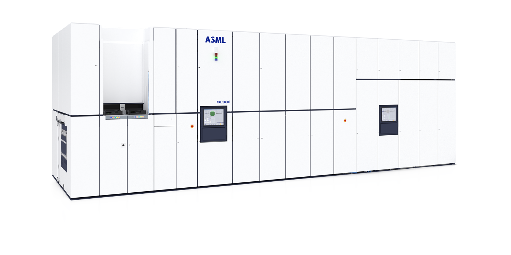
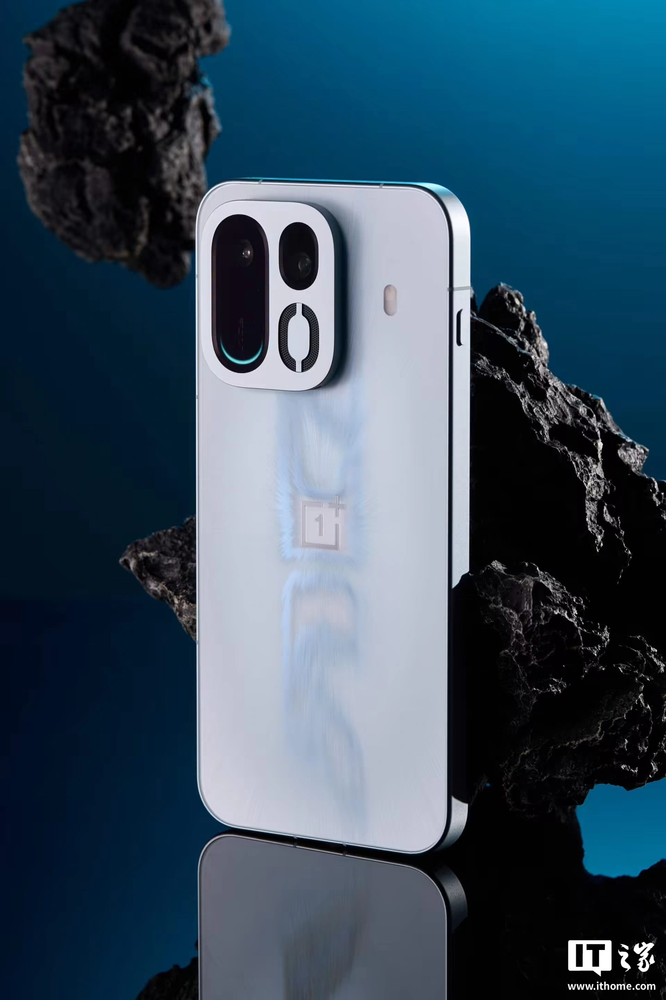
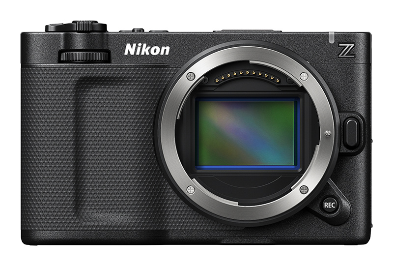
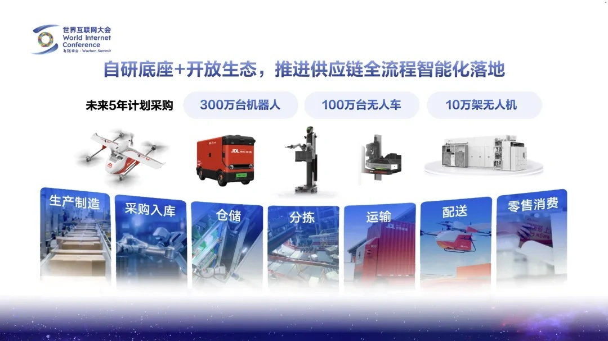
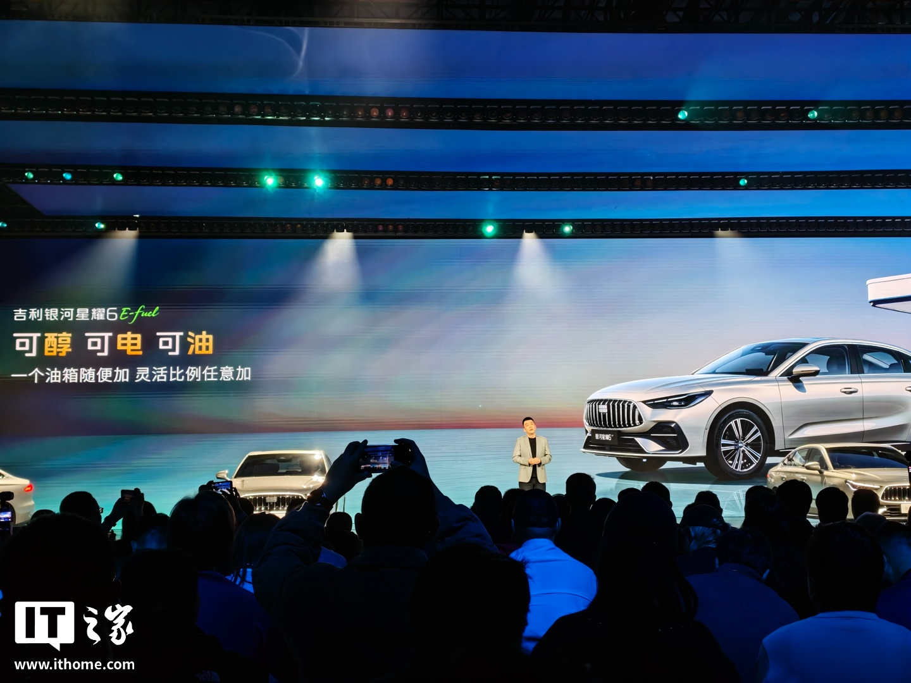
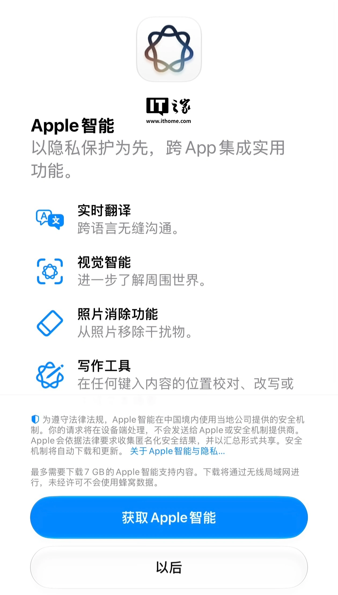
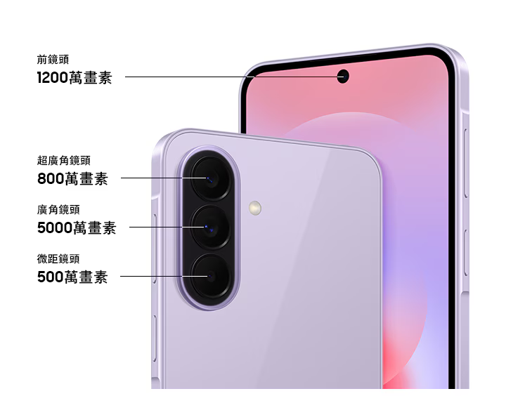
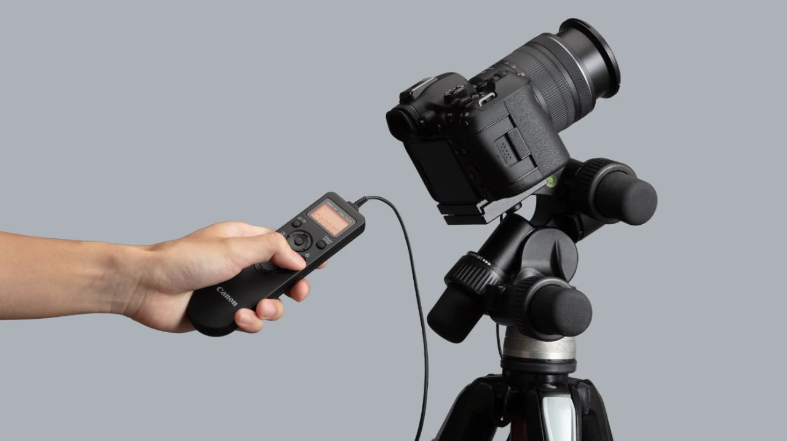
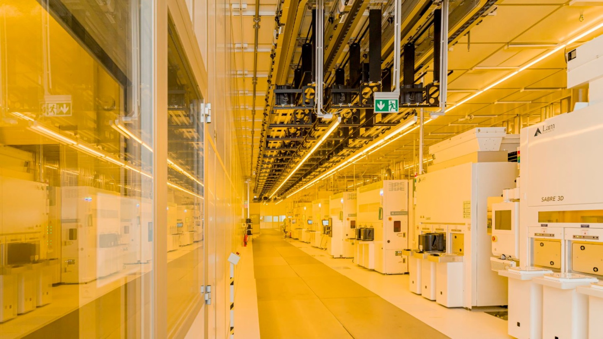

뉴스
기술의 변화, 매일 한눈에.
카메라 · 스마트폰 · AI, 해외 테크 소식을 모아 전합니다.
최근 발행2026-11-05
새로 들어온 소식
최신 뉴스
전체 4,136개 기사
일부 반도체 장비 제조업체, 2029년 공급 협상 시작

SIA & WSTS: 2026년 3분기 전 세계 반도체 매출 5,177억 달러, 전 분기 대비 24.1% 증가
Samsung전자, 미국 테일러 제2 파운드리에서 AMD 등 고객사에 HBM 베이스 다이 생산 계획

Samsung Galaxy S27 시리즈 스마트폰 세관 선적 서류 정보 등장, Qualcomm 스냅드래곤 8 Elite Gen 6 버전 S27 Pro 공개

Redmi Turbo 6 Max, 11,000mAh 대용량 배터리 탑재 예상… 샤오미 스마트폰 중 역대 최대 용량

Realme 17T 5G, 재설계된 카메라 아일랜드와 함께 실물 공개

OnePlus Ace 7 시리즈 스마트폰 첫 판매량 공개: OnePlus Ace 6 대비 약 180%

Nikon ZR 풀프레임 카메라 펌웨어 2.00 버전 공개: H.265 비디오 포맷 RED 컬러 사이언스 지원, 곧 다운로드 가능

MOFT, Apple iPhone 듀오용 신형 스마트폰 케이스 출시: 접이식 디자인으로 화면 보호 및 그립으로 활용 가능

징둥 차오펑: 향후 5년간 로봇 300만 대, 무인차 100만 대, 드론 10만 대 구매 계획

IT 모닝 브리핑 1104: iOS 27.3 베타 버전, 중국 본토 Apple Intelligence 탑재; ZTE, 400억 위안 규모 스마트폰 사업 매각 루머 부인; 세계 최초 메탄올 하이브리드 세단 지리 갤럭시 싱야오 6EF 출시; 전국 안심 소비 플랫폼 출시...
iPhone 날씨 앱, 다음 주 금요일 기온 차이로 실시간 검색어 1위: Apple 기본 날씨 앱, 여러 지역에서 13일 최저 기온 영하 32도 표시, 네티즌들 "극한의 종말, 피난처를 잘 지켜라" 농담

신중하게 사용하세요: iPhone Duo, iOS 27.3 베타 버전으로 업데이트 시 위챗 '다른 기기 동시 로그인' 기능 일시적으로 누락

Insta360 Ace Pro 3 카메라 렌더링 유출: 팔각형 라이카 렌즈 하우징, 배터리 용량 25% 증가

Huawei 스타라이트 첫 바 타입 스마트폰 OSTA O1 Pro 패키지 일부 유출, 16GB+1TB 사양

Huawei 서브 브랜드 OSTA, 첫 바 타입 스마트폰 OSTA O1 Pro 출시 예정

Galaxy A38, 5882mAh 배터리 탑재… Samsung Galaxy A 시리즈 중 최대 용량 스마트폰 될 전망

Counterpoint: 2023년 3분기 전 세계 스마트폰 평균 판매가 분기별 사상 최고치 기록, Apple 매출 동기 대비 최고치 경신

안드로이드 최초 바 타입 스마트폰 Coolpad COOL X Wide, 출하 연기 발표 및 공식 사과문 공개

Canon, 신제품 타이머 리모컨 TC-N3, TC-E3 및 마이크 DM-E10D 출시, 1199위안부터

보쉬, 2028년 1월 독립 반도체 사업부 설립 예정
검색 결과가 없습니다
다른 검색어를 입력하거나 필터를 초기화해 보세요.